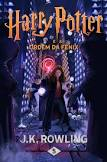

Harry Potter e a Ordem da Fênix

Sinopse
Parece impossível, mas, no bairro mais Muggle do mundo Muggle, Harry é
emboscado por Dementors! Para salvar a sua vida e a do primo Dudley,
Harry não tem outra hipótese senão usar magia - mesmo sabendo que isso
significará a sua expulsão mais que certa de Hogwarts. Enquanto o
Ministério da Magia continua a não acreditar que o terrível Senhor das
Trevas está de volta, Voldemort e os seus fiéis Devoradores da Morte já
começaram a preparar o seu regresso ao poder. Porém, há uma nova
esperança: uma antiga ordem secreta, da qual os pais de Harry fizeram
parte, voltou a organizar-se e Dumbledore está atento.
Fonte: Google Books
| Data |
Autor |
Idioma Original |
Gêneros |
Número de Páginas |
Editora |
| 21 de junho de 2003 |
J.K. Rowling |
Inglês |
Romance, Ficção juvenil, Literatura fantástica |
750 |
Pottermore Publishing |
O Senhor dos Anéis: A Sociedade do Anel

Sinopse
A Sociedade do Anel O volume inicial de O Senhor dos Anéis, lançado
originalmente em julho de 1954, foi o primeiro grande épico de fantasia
moderno, conquistando milhões de leitores e se tornando o padrão de
referência para todas as outras obras do gênero até hoje. A imaginação
prodigiosa de J.R.R. Tolkien e seu conhecimento profundo das antigas
mitologias da Europa permitiram que ele criasse um universo tão complexo
e convincente quanto o mundo real. A Sociedade do Anel começa no
Condado, a região rural do oeste da Terra-média onde vivem os diminutos
e pacatos hobbits. Bilbo Bolseiro, um dos raros aventureiros desse povo,
cujas peripécias foram contadas em O Hobbit, resolve ir embora do
Condado e deixa sua considerável herança nas mãos de seu jovem parente
Frodo. O mais importante lega
Fonte: Google Books
| Data |
Autor |
Idioma Original |
Gêneros |
Número de Páginas |
Editora |
| 29 de julho de 1954 |
J.R.R. Tolkien |
Inglês |
Literatura fantástica, Alta fantasia, Ficção de aventura, Romance
de cavalaria, Fantasia heroica
|
576 |
HarperCollins Brasil |
Percy Jackson E Os Ladroes Do Olimpo

Sinopse
The Lightning Thief é o primeiro livro da série Percy Jackson & os
Olimpianos baseado na mitologia grega, escrito por Rick Riordan., que
narra a vida do adolescente Percy Jackson que descobre ser um semideus,
filho de Poseidon com uma humana.
Fonte: Google Books
| Data |
Autor |
Idioma Original |
Gêneros |
Número de Páginas |
Editora |
| 28 de junho de 2005 |
Rick Riordan |
Inglês |
Romance, Mitologia grega, Fantasia, Literatura fantástica, Ficção
juvenil, Alta fantasia
|
326 |
Casa das Letras |
Harry Potter e a Camara Secreta

Sinopse
Harry Potter and the Chamber of Secrets é um romance de fantasia escrito
pela britânica J. K. Rowling. É o segundo livro da série Harry Potter.
Fonte: Google Books
| Data |
Autor |
Idioma Original |
Gêneros |
Número de Páginas |
Editora |
| 2 de julho de 1998 |
J. K. Rowling |
Inglês |
Romance, Literatura fantástica, Bildungsroman, Alta fantasia,
Ficção de aventura
|
252 |
Pottermore Publishing |
Walt Disney O triunfo da imaginação americana

Sinopse
Walt Disney: o triunfo da imaginação americana", de NEAL GABLER, é o
retrato definitivo de uma das mais importantes figuras da história
cultural e do entretenimento dos Estados Unidos no século XX. Após sete
anos de elaboração e pesquisa meticulosa Gabler foi o primeiro escritor
a ter acesso aos arquivos de Disney, eis aqui a história completa do
homem que deixou uma marca indelével em nossa cultura, mas cuja vida foi
grandemente envolvida pelo mito. "De longe a mais brilhante e específica
biografia de Disney. Os detalhes familiares e as particularidades de sua
profissão são reveladores... Walt Disney está se mostrando para nós
aparentemente pela primeira vez." Entertainment Weekly "Magistral... O
melhor aspecto da obra de Gabler é a sua coerência. O admirado autor de
"An Empire of Their Own: How the Jews Invented Hollywood" e da biografia
de Walter Winchell, Gabler é um especialista em Hollywood.
Consequentemente, seu livro não é apenas uma enumeração de fatos. Ele
oferece uma análise inteligente." USA Today "O olhar impaciente de
Gabler se revigora a cada página... Parte da realização formidável do
autor está em captar o complexo trabalho artístico de Disney e
relacioná-lo com a vida desse grande artista." Los Angeles Times Book
Review "Ricamente detalhado, muitas vezes comovente, o perfil
psicológico de um visionário." Baltimore Sun
Fonte: Google Books
| Data |
Autor |
Idioma Original |
Gêneros |
Número de Páginas |
Editora |
| janeiro de 2006 |
Neal Gabler |
Português |
Biografia |
736 |
Novo Século |